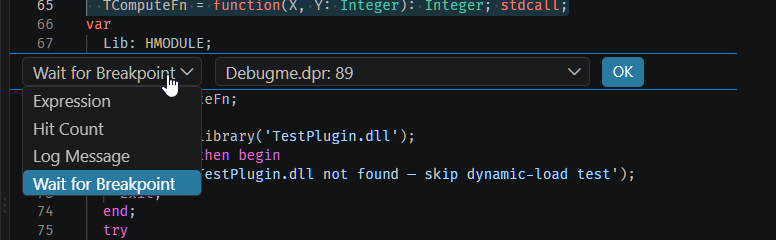
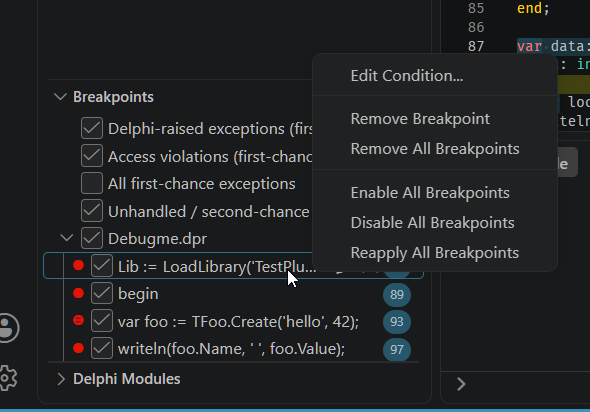
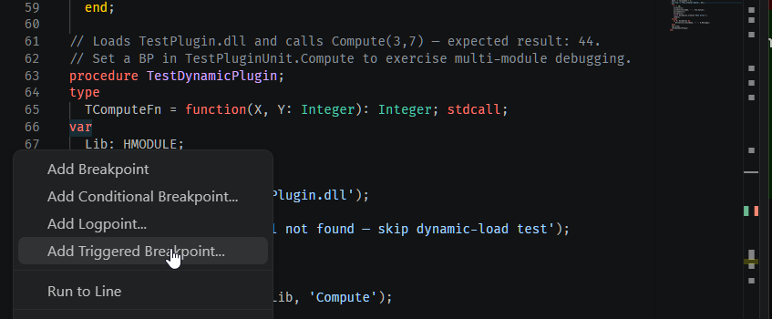

3. Breakpoints
Seven kinds, plus one command that is not a breakpoint but belongs here.
Source-line breakpoints
Click the editor gutter, as in any other language. One behaviour worth knowing: a
breakpoint placed on a routine’s begin line is planted at the first real
statement instead. Stopping on begin itself would show you the caller’s
leftovers, because the parameters have not been spilled to the frame yet — moving it is
what makes the Variables panel show the right thing when you arrive.
var block is not moved to the nearest executable line and no alternative is
suggested: the line simply comes back unverified — a hollow gutter marker — with the
reason “No debug info for this line”. If a breakpoint refuses to arm,
check that first, then check that the unit was compiled with debug information at all
(chapter 1).
Conditional breakpoints
Right-click the gutter and choose Edit Breakpoint. The condition is a Pascal expression evaluated in the debuggee at every hit: non-zero or true stops, zero or false continues. The full expression grammar is in chapter 8.
So a breakpoint that suddenly stops every time with an error is the debugger reporting a broken condition, not misbehaving. Read the message and fix the expression. Note that the hit count is bypassed in this case: a
%100 would otherwise swallow the very
stop that is trying to tell you something is wrong.

Hit-count breakpoints
Same editor as above, Hit Count selected in the dropdown.
| Hit count | Meaning |
|---|---|
N | Stop on hit number N exactly |
>N | Stop on every hit after the Nth |
>=N | Stop from the Nth hit onwards |
%N | Stop on every Nth hit |
Logpoints
A logpoint never stops the program: it writes a message and continues. Expressions in
braces are evaluated live at each hit, so Order {Order.Id} total {Order.Total}
prints real values. Use {{ and }} for a literal brace. This is
how you instrument a loop that a real breakpoint would make unusable.
Logpoint output is kept separate from the debuggee’s own output — see chapter 8.

Triggered breakpoints
Right-click a breakpoint in the editor gutter and choose Add Triggered Breakpoint…, then pick another breakpoint as the trigger. The one you added stays disarmed until the trigger fires once, then arms itself for the rest of the session — useful for a bug that only reproduces after some setup routine has run, so you do not have to sit through every hit before it.
This is a VS Code editor feature, not a debugger one: the editor is the side keeping track of which trigger has fired, and it works by re-sending the breakpoint list for the file once the trigger stops the program — the same mechanism behind every other breakpoint edit. Nothing about it is specific to this debugger, and nothing needs to be enabled.

Address breakpoints
Set from the Disassembly View gutter, for when you want to stop at an instruction rather than a line — typically in code with no source at all.
They are stored as a (module, RVA) pair rather than a bare address. That is what makes them survive a relaunch under ASLR, and makes them rebind automatically when the owning package is unloaded and loaded again at a different base. An address inside a module that is not currently loaded is refused outright, with a reason, rather than planted speculatively somewhere that happens to be mapped. Setting one at an address that already has an address breakpoint replaces the previous entry.
Conditions, hit counts and log messages all work on address breakpoints exactly as they do on source ones.
Screenshot: the Disassembly View with the gutter showing an address breakpoint set on an instruction.
tutorial-03-address-breakpoint.png)Data breakpoints (hardware watchpoints)
Right-click a value in the Variables or Watch panel and choose Break on Value Change or Break on Value Access. Execution stops when the memory is written, and the stop tells you what happened:
FCustomer.FBalance: 1500 -> 0 (thread 3)Old value, new value, and which thread wrote it — the three things you actually wanted to know about a field that is being corrupted.
Screenshot: the Variables panel right-click context menu showing “Break on Value Change” and “Break on Value Access”.
tutorial-03-data-breakpoint-menu.png)There is a second way in that is easy to miss: the Breakpoints panel has an Add Data Breakpoint at Address entry, which is the only place you can type a target instead of picking it off a row. Useful when the address came from somewhere else — a crash report, the disassembly, a previous session.
Screenshot: the BREAKPOINTS panel’s Add Data Breakpoint at Address entry, and the input it opens for typing an address and a byte width.
tutorial-03-data-bp-at-address.png)What you can watch
- A literal address.
- A global or unit-scoped variable, by name.
-
An arbitrary expression, watched where it lives — which is more useful than it
sounds.
Arr[High(Arr)]watches the last element.PByte(@Arr[0]) - 1watches the byte immediately before the buffer, which is how you catch whoever is writing past the end of an array — the classic bug that corrupts something unrelated and leaves no trace at the scene. - A local. The watchpoint is pinned to that specific frame invocation and is withdrawn automatically the moment the frame’s stack lifetime ends, with a console message telling you so. Without that, the watchpoint would silently keep firing on whatever reused that stack slot next.
The four slots
Other constraints that follow from the hardware and from deliberate design:
-
Access modes are
writeandreadWrite. There is no watch-reads-only mode on x86 or x64, soreadWritealso fires on plain writes; aread-only request is refused rather than quietly upgraded. - The session must be stopped to arm or remove a watchpoint.
- Watching a field of an object or record you have already expanded in the tree is refused; watch the expression instead.
- A remove request issued while the program is running does not free the hardware slot until the next stop.
- Re-entering the same routine at the same stack depth legitimately produces the same frame identity, so a watchpoint on a local follows the new invocation.
Set Next Statement
Not a breakpoint, but the other half of controlling where execution goes: it moves the instruction pointer without restarting, so you can re-run a block you just stepped through, or skip one entirely.
While stopped, right-click the line you want to jump to and choose Jump to Cursor from the editor’s context menu.
There is no yellow arrow to drag — dragging the execution marker is a Delphi IDE gesture that Visual Studio Code does not implement. And the command is not called Set Next Statement; VS Code calls it Jump to Cursor.
Directly above it in the same menu sits Run to Cursor, which is the Delphi IDE’s Run to cursor (F4). They do opposite things. Run to Cursor resumes the program and lets every statement in between execute until it reaches your line. Jump to Cursor executes nothing at all — it moves the instruction pointer there, skipping whatever lay in between. Picking the wrong one of two adjacent menu entries is an easy mistake with very different consequences.
One more difference from the Delphi IDE: the destination is not checked. The debugger will move the instruction pointer to any line carrying debug information — including one in a different routine — leaving the call stack untouched, and nothing warns you. Jumping out of the routine you are stopped in will corrupt the stack.
Screenshot: the editor’s right-click context menu on a stopped line, with Run to Cursor and Jump to Cursor both visible and adjacent — the whole point is that the reader can see the two together and tell them apart.
tutorial-03-set-next-statement.png)Hollow, solid, and back again
A breakpoint marker has two states worth reading. Solid means the line resolved to an address and the breakpoint is armed. Hollow means it did not — hover it and the reason is there.
The state is not fixed at the moment you set it. A breakpoint in a unit belonging to a runtime package that has not loaded yet starts hollow, and fills in by itself the moment the package maps and its symbols are read. You do not have to set it again, and you do not have to wait before setting it — see chapter 9.
It goes the other way too: unload the package and the marker goes hollow again, because a breakpoint in code that is no longer mapped is not armed. Watching the marker is the quickest way to tell whether the module you care about is actually loaded.
What is not here
DAP function breakpoints — breaking by routine name rather than by location — are not supported. See Known limitations.